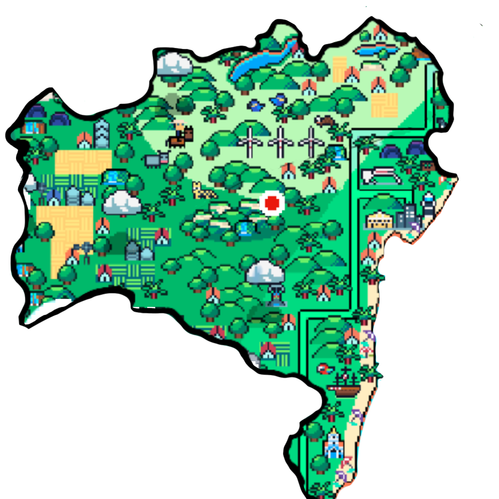
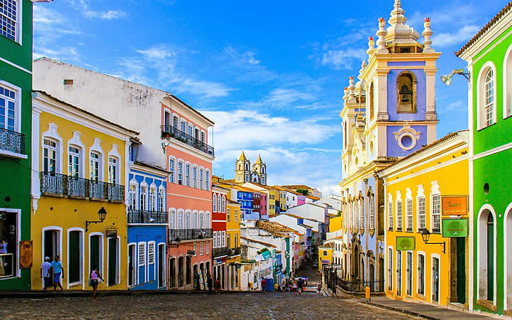
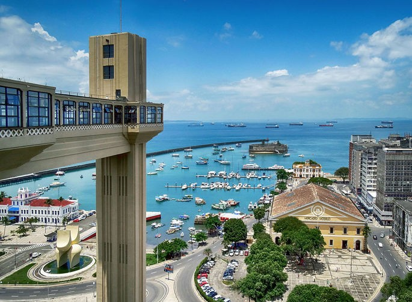
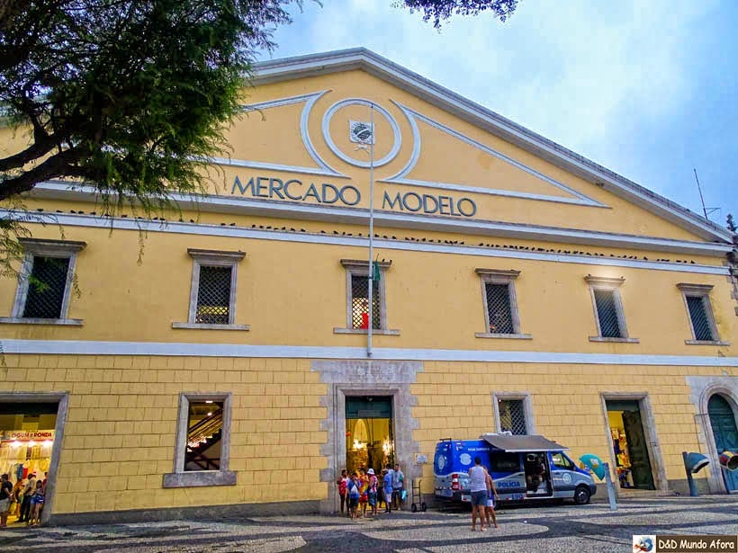

 A Bahia é o mais antigo estado brasileiro e, hoje, o mais populoso da região Nordeste. A colonização na região começou quando o navegador português Pedro Álvares Cabral aportou na Baía Cabrália, em 22 de abril de 1500.A primeira missa foi celebrada no local pelo frei franciscano Henrique Soares Coimbra em 26 de abril.A notícia do descobrimento foi levada para o rei português Dom Manuel I por Gaspar de Lemos, enquanto Cabral seguia para as Índias. Cabral chamou a região de Vera Cruz. No ano seguinte, o navegador Américo Vespúcio, que era florentino, inicia uma expedição de exploração do território. A expedição terminou somente em 1504. A Bahia foi palco das principais decisões do futuro do território hoje conhecido como Brasil. Desde o descobrimento foi alvo de invasões, revoltas e conflitos.
 Pelourinho: um dos mais emblemáticos pontos turísticos da BahiaCasas coloridas do Pelourinho, ponto turístico BahiaO Pelourinho é o bairro mais famoso da capital, e é símbolo do Centro Histórico de Salvador Carinhosamente chamado de “Pelô”.
 Elevador Lacerda: a vista panorâmica mais famosa da Bahia Elevador Lacerda e Baía de Todos os Santos, em Salvador, Bahia O Elevador Lacerda, com 72 m de altura, é o primeiro elevador do mundo a servir como transporte público Mais de Salvador!
 Mercado Modelo: compras e gastronomia em Salvador Mercado Modelo, em Salvador, na Bahia O Mercado Modelo é point certo para quem gosta de especiarias típicas, souvenirs e pratos baianos.
Chuva

Sol